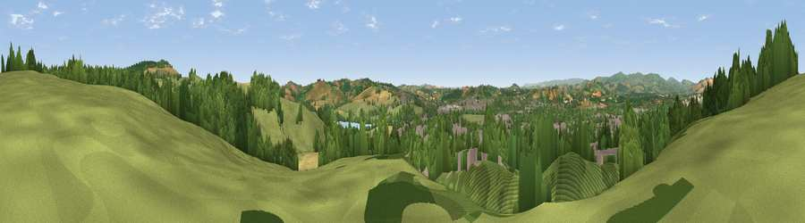

Viewpoint near Kingsteignton
#16845 in England · top 35% of its area beats it · near KingsteigntonWhere it is
The exact computed spot (SX 87925 73725). Click the marker for map links.
The view, rendered

A 360° render of this exact spot computed from the terrain model, tree cover and land cover — summer colours, afternoon light, calibrated against photographs of famous viewpoints. Real trees, hedges and buildings will differ in detail.
The panorama
Grey silhouette: terrain skyline in each direction (720 bearings, Earth curvature and refraction included). Dashed green: skyline with trees (+15 m) and buildings (+8 m) as obstacles. Blue strip: how far the ground is visible on each bearing.
Where the view opens
Wedge length = distance to the farthest visible ground on that bearing (vegetation-aware). Rings at 10, 25 and 50 km.
What fills the view
48% woodland · 25% grassland · 22% built-up · 4% cropland ·
Angular shares of the visible panorama (visual magnitude), not map area. Landscape diversity 0.53 (0–1 Shannon).
Key numbers
More beautiful places nearby
The staircase of upgrades: each row has a higher view potential than everything closer. Driving times are estimates from straight-line distance, calibrated against real road routing — check an actual route before setting out.
| Place | Direction | Drive | Score |
|---|---|---|---|
| Viewpoint near Kingsteignton | ESE · 1 km | ~3 min | 64.0 |
| Viewpoint near Bishopsteignton | E · 1 km | ~4 min | 69.5 |
| Viewpoint near Bishopsteignton | ENE · 3 km | ~7 min | 79.9 |
| Viewpoint near Holcombe | ENE · 6 km | ~12 min | 83.3 |
| Viewpoint near Shaldon | ESE · 6 km | ~13 min | 83.8 |
| Viewpoint near Stokeinteignhead | SE · 6 km | ~13 min | 84.1 |
| High Peak | ENE · 25 km | ~41 min | 85.3 |
| Golden Cap | ENE · 56 km | ~78 min | 88.7 |
50.55251, -3.58338 · source: screening · position refined by local search. Computed location — check access rights before visiting.